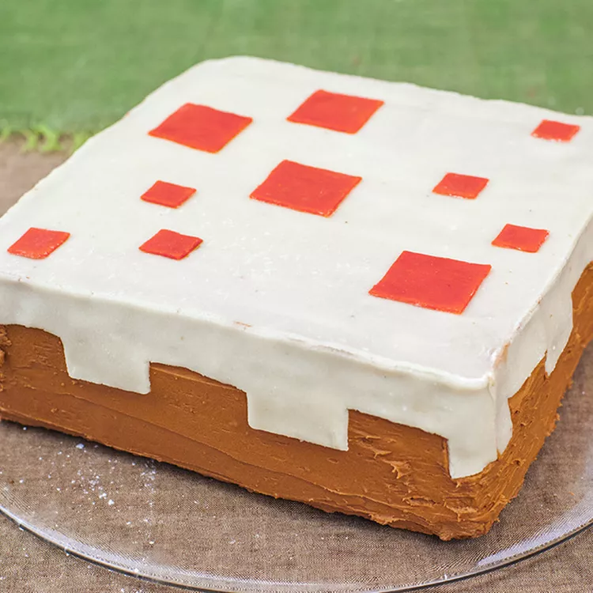

HOME
Minecraft Cake

Have you ever wanted a professional cake without the price? Well,
I have just the recipe for you. This simple Minecraft cake will sure
impress at your next party.
Using a simple chocolate cake recipe, you will turn this two layer cake
into a masterpiece. It uses items you can find at the grocery store and tools you
can already find in your kitchen. This is sure to be a show stopper at your next party!
Ingredients
Chocolate Cake
- 2 ⅓ cups all-purpose flour
- 1 ½ tablespoons all-purpose flour
- ½ cup cocoa powder
- 3 tablespoons cocoa powder
- 1 tablespoon baking powder
- ½ teaspoon salt
- 1 cup unsalted butter, softened
- 1 ⅓ cups white sugar
- 4 eggs
- 2 teaspoons vanilla extract
- 1 cup milk
- 1 ½ tablespoons milk
Decorations
- ¼ cup cherry jam
- 3 cups chocolate buttercream frosting
- 14 ounces marzipan
- 5 drops red food coloring, or as needed
- 1 tablespoon confectioners' sugar, or as needed
Instructions
- Preheat oven to 350 degrees F (175 degrees C). Grease and flour two 9-inch square cake pans.
- Sift 2 1/3 cups plus 1 1/2 tablespoon flour, 1/2 cup plus 3 tablespoons cocoa powder, baking powder, and salt together in a large bowl.
- Beat butter and white sugar together in a bowl with an electric mixer until light and fluffy, about 4 minutes. Add eggs, one at a time, beating well after each addition. Beat in vanilla extract. Add flour mixture alternately with 1 cup plus 1 1/2 tablespoon milk, mixing batter gently between each addition.
- Divide batter evenly between the prepared cake pans.
- Bake in the preheated oven until a toothpick inserted into the center comes out clean, 30 to 40 minutes. Cool for 10 minutes in the pan. Invert onto a wire rack to cool completely, about 30 minutes.
- Trim tops of cake layers to make sure they are flat. Set 1 layer on a serving platter. Spread jam on top; cover with second layer. Spread chocolate buttercream frosting over top and sides of the cake, reserving about 2 tablespoons frosting.
- Pinch off a piece of marzipan the size of a golf ball. Add red food coloring and knead until color is evenly distributed.
- Dust a flat work surface with confectioners' sugar and roll out remaining, undyed, marzipan. Cut out a 9-inch square; carefully transfer to the top of the cake.
- Roll trimmings of marzipan and cut into four 9x1-1/2-inch strips. Cut 3 rectangular notches into 1 edge of each strip. Press strips onto the sides of the cake, notches facing down; gently press top and strips of marzipan together to adhere.
- Roll out red marzipan and cut into squares of varying sizes. Spread a little of the reserved frosting on the back of each square to act as a glue; arrange in a random Minecraft pattern on top of the cake.